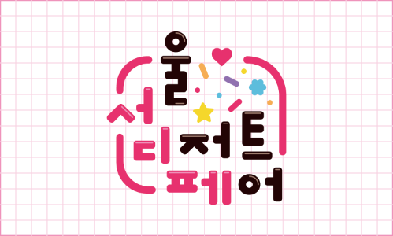
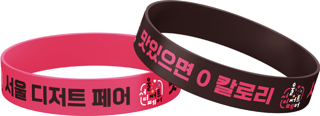
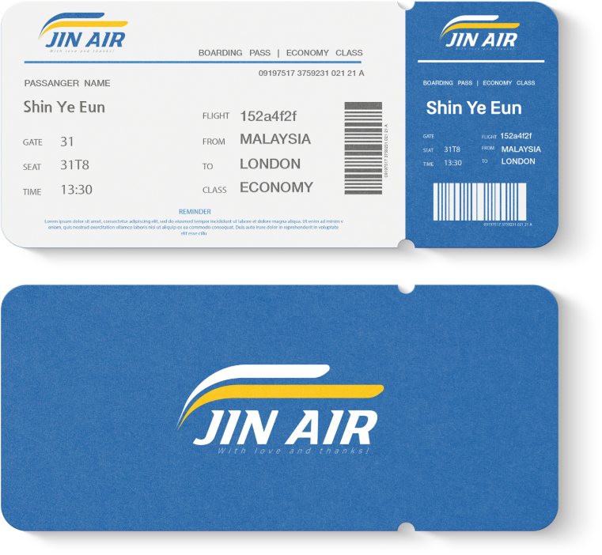
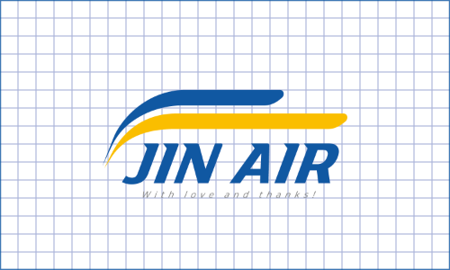
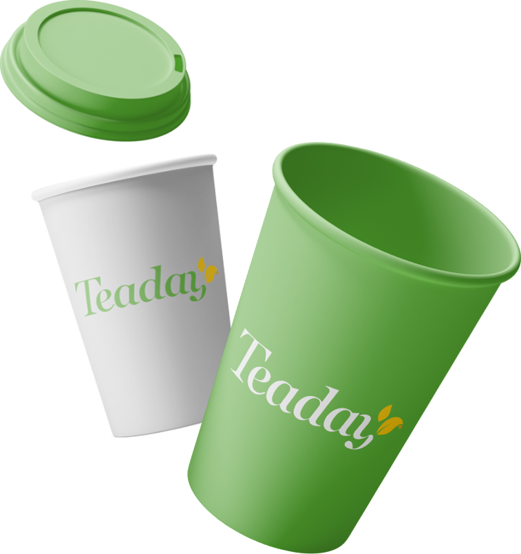
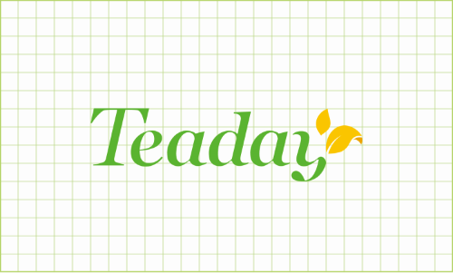
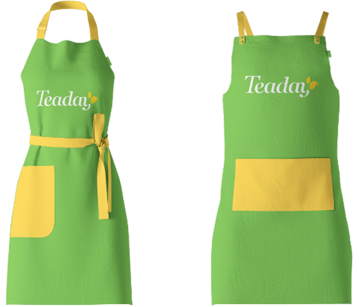

서울디저트페어는 국내의 각양각색 개성 넘치는 수제 디저트들을
만나 볼 수 있는 이색 전시회로, 기존의 밋밋했던 로고에서
디저트가 주는 즐거움이 느껴지도록 새롭게 리뉴얼하였습니다.

About
작업기간 2021년 3월 ~ 2021년 5월 사용 프로그램Illustrator
Main Color

Design Concept
로고를 전체적으로 봤을 때, 하나의 초코 도넛이 연상되도록
디자인하였으며 디저트에 자주 사용되는 스프링클을 표현한
도형을 추가하여 시각적 효과를 더해주었다.
글씨에 하이라이트를 추가해 줌으로써 코팅된 초콜릿을
표현해 주었고 단조로움을 피하기 위해 기존 로고의 대표
색상을 버리지 않고 앞 글자에 적용해 가시성을 높여주었다.
Corporate Identity
JIN AIR 진에어
Overview
진에어의 강력한 추진력과 활기참을 표현한 심볼과
글자 끝마다 포인트를 추가하여 비행기의 빠른 속도감이
느껴지도록 디자인하였습니다.


About
작업기간 2021년 9월 ~ 2021년 10월 사용 프로그램Illustrator
Main Color
Design Concept
기존의 슬로건에는 나타나지 않았던 고객들을 향한 마음을 나타내기 위하여
'With Love And Thanks!'라는 슬로건을 추가하여 하단에 배치해주었으며,
사랑과 감사를 담아 항공서비스를 제공해 드리겠다는 의미를 담고 있습니다.
Brand Identity
Teaday 티데이
Overview
코로나의 장기전으로 인해 건강을 찾는 손님이 많아졌고,
그만큼 비인기 메뉴였던 차(Tea) 음료의 선호도가
대폭 상승했습니다. 이 때문에 카페인이 낮거나, 없는 음료를
중심으로 카페 브랜드를 새롭게 개발하였습니다.


About
작업기간 2021년 3월 ~ 2021년 5월 사용 프로그램Illustrator
Main Color

Design Concept
가벼운 느낌을 내주기 위해 세리프체를 활용하였다.
y에 잎을 결합한 것과 로고의 전체적인 색상은 각각 자연과 건강함을
연상시키도록 디자인하였다. 대표색상은 자연, 찻잎, 건강을 연상시킬 수 있는
그린계열과 긍정적이고 적극적이며 부드러운 자극을 주는 옐로우계열을 사용하였다.